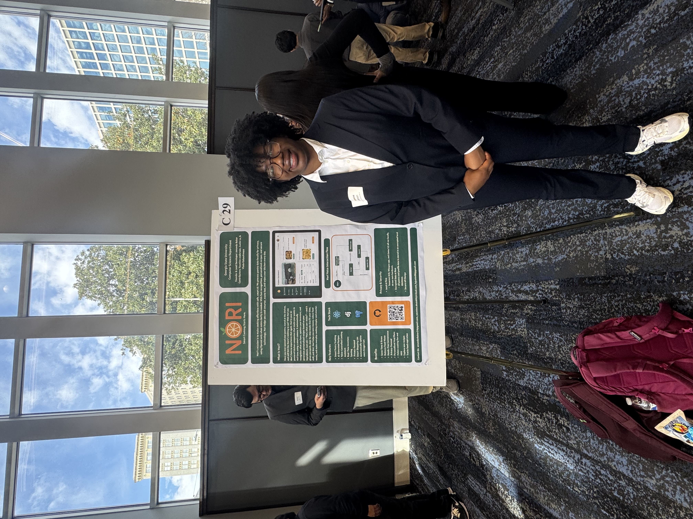

About Me


Hello my name is Yasmine Anderson. I am a fourth year computer science major from Las Vegas, Nevada. I graduate this summer! I am also a spring 2026 initiate of the Enchanting Eta Mu chapter of Alpha Kappa Alpha Sorority, Incorporated. During my time at Georgia State University I worked on campus as a Competitive Sports Supervisor, Resident Assistant, Senior Conference Assistant, and a Panther LEAP mentor.
When I first began my studies as a computer scientist I had aspirations to be a software engineer at a top company. I quickly realized that career path was not for me. Backend coding is not for me. After taking different classes and doing more research I have goals to either work in cybersecurity as a SOC analyst/on the defense team in general or a software developer.
After graduating I will obtain a master’s degree from Georgia State University while working as a Graduate Assistant at the Georgia State University Recreation Center. I also want to obtain a certification in COMPTIA sec +, and network +. When it comes to frontend software developing I want to work on more projects, and enhance my coding skills. Together I feel as though all of these things will allow me to set myself up to succeed in whichevre career I choose to focus on.
Skills/Interests
- Python
- Excel
- SQL
- Conflict Management
- Leadership
Goals
- Obtain My Master's Degree
- Earn a COMPTIA Sec+ Certification
- Get an Entry Level Job
- Work My Way to The Top
- Inspire Other Young Black Girls in Tech
| Category | Favorite | Reasoning |
|---|---|---|
| Movie | The Help | I love the historical background behind the movie |
| Book | Educated | It's based off a true story and shows the power of education. |
| Food | Baked Beans | My family recipe is too good to dislike baked beans. |
| Hobby | Watching TV | It's just so entertaining |
Connect With Me
GitHub
VisitQuote of The Day
"Be The Change You Want To See In the World - Mahatma Gandhi"